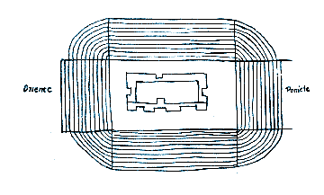

Fr. Diego de Landa
Selections from Relación de las
Cosas de Yucatan (1562)
Diego de Landa was a Spanish missionary to Mexico.
Born in Spain
in 1524, in 1541 he became a Franciscan monk, and soon was sent as one
of the
first of his order to the Yucatan peninsula in Mexico. He
founded the monastery of Izamal, of
which he was elected superior in 1553, and later became head of his
order in
Yucatan. His severity in
repressing the licentious customs of the Spaniards made him many
enemies, and
he was accused of usurping the powers of the bishop, and ordered to
Spain; but
he was absolved by the council of the Indies, and in 1573 returned to
Yucatan
as second bishop of Mérida; he died in Mérida in 1579.
De Landa is best known for two things. In 1562, he ordered the destruction, as he tells us, of 5000 Mayan idols and 27 Mayan books. His severity in pursuing non-Christians was such that in 1562 he was sent back to Spain for trial (he was eventually vindicated, and sent back to Mexico as bishop). While awaiting trial, de Landa wrote his Relación de las cosas de Yucatan (Description of Yucatan), the text from which selections are given below. In this text, de Landa describes the province, its geography, flora and fauna, the history, such as he could find it, of both the Mayas and the Spanish conquest, accounts of the customs of the Maya (including religious customs), the Maya writing system and calendar, and the role of missionaries in Christianizing the Maya. He seems to have relied on contemporary Maya informants, and his own observations.
The following selections are those that relate especially to Chichén Itzá.
Taken from Friar Diego de Landa, Yucatan Before and After the Conquest, translated with notes by William Gates (New York: Dover Publications, Inc., 1978).
* * * * * * * * * * * * * * *
V.
Provinces of
Yucatan. Its principal ancient
structures
Some old men of Yucatan say that they have heard from their ancestors that this country was peopled by a certain race who came from the East, whom God delivered by opening for them twelve roads through the sea. If this is true, all the inhabitants of the Indies must be of Jewish descent because, the straits of Magellan having been passed, they must have spread over more than 2000 leagues of territory now governed by Spain.
The language of this country is all one, a fact which aided greatly in its conversion, although along the coasts there are differences in words and accents. Those living on the coast are thus more polished in their behavior and language; and the women cover their breasts, which those further inland do not.
The country is divided into provinces subject to the nearest Spanish settlement. The province of Chectemal and Bak-halal is subject to Salamanca. The provinces of Ekab, of Cochuah and of Cupul are subject to Valladolid. Those of Akhin-Chel and of Izamal, of Sututa, of Hocabaihumun, of Tutuxiu, of Cehpech, and of Chakan, are attached to the city of Mérida; Camol (Canul), Campech, Champutun, and Tixchel are assigned to San Francisco de Campeche.
There are in Yucatan many edifices of great beauty, this being the most outstanding of all things discovered in the Indies; they are all built of stone finely ornamented, though there is no metal found in the country for this cutting. These buildings are very close to each other and are temples, the reason for there being so many lying in the frequent changes of the population, and the fact that in each town they erected a temple, out of the abundance of stone and lime, and of a certain white earth excellent for buildings.
These edifices are not the work of other peoples, but of the Indians themselves, as appears by stone figures of men, unclothed but with the middle covered by certain long fillets which in their language are called 'ex', together with other devices worn by the Indians.
While the author of this work was in that country, there was found in a building that had been demolished a large urn with three handles, painted on the outside with silvered colors, and containing the ashes of a cremated body, together with some pieces of the arms and legs, of an unbelievable size, and with three fine beads or counters of the kind the Indians use for money. At Izamal there were eleven or twelve of these buildings in all, with no memory of their builders; on the site of one of these, at the instance of the Indians, there was established the [Christian] monastery of San Antonio, in the year 1550.
The next most important edifices are those of Tikoch and of Chichén Itzá, which will be described later. Chichén Itzá is finely situated ten leagues from Izamal and eleven from Valladolid, and they tell that it was ruled by three lords, brothers that came to the country from the West. These were very devout, built very handsome temples, and lived unmarried and most honorably. One of them either died or went away, whereupon the others conducted themselves unjustly and wantonly, for which they were put to death. Later on we shall describe the decorations of the main edifice, also telling of the well into which they cast men alive as a sacrifice; and also other precious objects. It is over seven stages down to the water, over a hundred feet across and marvelously cut in the living rock. The water appears green, which they say is caused by the trees that surround it.
V.
Cuculcan.
Foundation of Mayapan.
The opinion of the Indians is that with the Itzás who settled Chichén Itzá there ruled a great lord named Cuculcán, as an evidence of which the principal building is called Cuculcán.
They say that he came from the West, but are not agreed as to whether he came before or after the Itzás, or with them. They say that he was well disposed, that he had no wife or children, and that after his return he was regarded in Mexico as one of their gods, and called Cezalcohuati. In Yucatan also he was reverenced as a god, because of his great services to the state, as appeared in the order which he established in Yucatan after the death of the chiefs, to settle the discord caused in the land by their deaths.
This Cuculcán, having entered into an agreement with the native lords of the country, undertook the founding of another city wherein he and they might live, and to which all matters and business should be brought. To this end he chose a fine site eight leagues further inland from where Mérida now lies, and some fifteen or sixteen from the sea. They surrounded the place with a very broad wall of dry stone some eighth of a league in extent, leaving only two narrow doorways; the wall itself was low. In the middle of the enclosure they built their temples, calling the largest Cuculc‡n, the same as at Chichén Itzá. They built another circular temple, different from all others in the country, and with four entrances; also many others about them, connected one with the other. Within the enclosure they built houses for the lords alone, among whom the country was divided, assigning villages to each according to the antiquity of their lineage and their personal qualifications. Cuculcán did not call the city after himself, as was done by the Ah-Itzaes at Chichén Itzá (which means the "well of the Ah-Itzaes"), but called it Mayapán, meaning the "Standard of the Mayas", the language of the country being known as Maya. The Indians of today call it Ich-pa, meaning "Within the Fortifications".
Cuculcán lived for some years in this city with the chiefs, and then leaving them in full peace and amity returned by the same road to Mexico. On the way he stopped at Champotón, and there in memorial of himself and his departure he erected in the sea, at a good stone's throw from the shore, a fine edifice similar to those at Chichén Itzá. Thus did Cuculcán leave a perpetual memory in Yucatan.
XXVII.
Kind
of Confessions among the Indians.
Abstinences and superstitions.
Diversity and abundance of idols.
Duties of the priests.
. . . . . In some of the fasts observed for their fiestas they neither ate meat nor knew their wives. They always fasted when receiving duties in connection with their festivals, and likewise on undertaking duties of the State, which at times lasted as long as three years; those who violated their abstinence were great sinners.
So given were they to their idolatrous practices that in times of necessity even the women and youths and maidens understood it as incumbent on them to burn incense and pray to God that he free them from evil and overcome the demon who was the cause of it.
Even travelers on the roads carried incense with them, and a little plate on which to burn it; and then wherever they arrived at night they erected three small stones, putting a little incense on each, and three flat stones in front of these, on which they burned incense, praying to the god they called Ekchuah that he bring them safely back home; this ceremony they performed every night until their return, unless there were some other who could do this, or even more, on their account.
The Yucatecans had a great number of temples, sumptuous in their style; besides these temples in common the chiefs, priests, and principal men also had their oratories and idols in their houses for their private offerings and prayers. They held Cozumel and the well at Chichén Itzá in as great veneration as we have in our pilgrimages to Jerusalem and Rome; they visited them to offer gifts, especially at Cozumel, as we do at our holy places; and when they did not visit they sent offerings. When traveling also, and passing an abandoned temple, it was their custom to enter for prayers and burn incense.
So many idols did they have that their gods did not suffice them, there being no animal or reptile of which they did not make images, and these in the form of their gods and goddesses. They had idols of stone (although few in number), others more numerous of wood, but the greatest number of terra cotta. The idols of wood were especially esteemed and reckoned among their inheritances as objects of great value. They had no metal statues, there being no metals in the country. As regards the images, they knew perfectly that they were made by human hands, perishable, and not divine; but they honored them because of what they represented and the ceremonies that had been performed during their fabrication, especially the wooden ones.
The most idolatrous of them were the priests, the chilánes, the sorcerers, the physicians, the chacs and the nacónes. It was the office of the priests to discourse and teach their sciences, to indicate calamities and the means of remedying them, preaching during the festivals, celebrating the sacrifices and administering their sacraments. The chilánes were charged with giving to all those in the locality the oracles of the demon, and the respect given them was so great that they did not ordinarily leave their houses except borne upon litters carried on the shoulders. The sorcerers and physicians cured by means of bleeding at the part afflicted, casting lots for divination in their work, and other matters. The chacs were four old men, specially elected on occasion to aid the priest in the proper and full celebration of the festivals. There were two of the nacónes; the position of one was permanent and carried little honor, since it was his office to open the breasts of those who were sacrificed; the other was chosen as a general for the wars, who held office for three years, and was held in great honor; he also presided at certain festivals.
XXVIII. Sacrifices
and self-mortifications, both cruel and obscene, among the Yucatecans. Human victims slain by arrows, and
others.
At times they sacrificed their own blood, cutting all around the ears in strips which they let remain as a sign. At other times they perforated their cheeks or the lower lip; again they made cuts in parts of the body, or pierced the tongue crossways and passed stalks through, causing extreme pain; again they cut away the superfluous part of the member, leaving the flesh in the form of ears. It was this custom which led the historian of the Indies to say that they practiced circumcision.
At other times they practised a filthy and grievous sacrifice, whereby they gathered in the temple, in a line, and each made a pierced hole through the member, across from side to side, and then passed through as great a quantity of cord as they could stand; and thus all together fastened and strung together, they annointed the statue of the demon with the collected blood. The one able to endure the most was considered most valiant, and their sons of tender age began to accustom themselves to this suffering; it is frightful to see how much they were dedicated to this practice.
The women made no similar effusions of blood, although they were very devout. [[note: according to classic Maya relief sculptures, women DID practice ritual bloodletting, at least in the period 600-900 AD.]] Of every kind of animal obtainable, birds of the sky, animals of the earth, fishes of the sea, they used the blood to annoint the face of the demon; they also gave as presents whatever other thing they had. Of some animals they took out the heart and offered that; others were offered whole, some living, some dead, some raw, some cooked. They also made large offerings of bread and wine, and of all the kinds of food and drink they possessed.
To make these sacrifices in the courts of the temples there were erected certain tall decorated posts; and near the stairway of the temple there was a broad, round pedestal, and in the middle a stone, somewhat slender and four or five palms in height, set up; at the top of the temple stairs there was another similar one.
Apart from the festivals which they solemnized by the sacrifices of animals, on occasions of great tribulation or need the priests or chilánes ordained the sacrifice of human beings. For this purpose all contributed, for the purchase of slaves. Some out of devotion gave their young sons. The victims were feted up to the day of the sacrifice, but carefully guarded that they might not run away, or defile themselves by any carnal acts; then while they went from town to town with dances, the priests, the chilánes, and the celebrants fasted.
When the day of the ceremony arrived, they assembled in the court of the temple; if they were to be pierced with arrows their bodies were stripped and annointed with blue, with a miter on the head. When they arrived before the demon, all the people went through a solemn dance with him around the wooden pillar, all with bows and arrows, and then dancing raised him upon it, tied him, all continuing to dance and look at him. The impure priest, vestured, ascended and whether it was man or woman wounded the victim in the private parts with an arrow, and then descended and annointed the face of the demon with the blood he had drawn; then making a sign to the dancers, they began in order as they passed rapidly, dancing, to shoot an arrow to the victim's heart, shown by a white mark, and quickly made of his chest a single point, like a hedgehog of arrows.
If his heart was to be taken out, they conducted him with great display and concourse of people, painted blue and wearing his miter, and placed him on the rounded sacrificial stone, after the priest and his officers had annointed the stone with blue and purified the temple to drive away the evil spirit. The chacs then seized the poor victim and swiftly laid him on his back across the stone, and the four took hold of his arms and legs, spreading them out. Then the nacon executioner came, with a flint knife in his hand, and with great skill made an incision between the ribs on he left size, below the nipple; then he plunged in his hand and like a ravenous tiger tore out the living heart, which he laid on a plate and gave to the priest; he then quickly went and annointed the faces of the idols with that fresh blood.
At times they performed this sacrifice on the stone situated on the top step of the temple, and then they threw the dead body rolling down the steps, where it was taken by the attendants, was stripped completely of the skin save only on the hands and feet; then the priest, stripped, clothed himself with this skin and danced with the rest. This was a ceremony with them of great solemnity. The victims sacrificed in this manner were usually buried in the court of the temple; but it occurred on occasions that they ate the flesh, distributing portions to the chiefs and those who succeeded in obtaining a part; the hand, feet, and head went to the priests and celebrants; and these sacrificial victims they then regarded as sainted. If they were slaves captured in war, their masters kept the bones and displayed them in the dances, as a mark of victory. At times they threw the victims alive into the well at Chichén Itzá, believing that they would come forth on the third day, even though they never did see them reappear.
XLII.
Multitude
of buildings in Yucatan. Those of
Izamal, or Mérida, and of Chichén Itzá.
. . . . .
Chichén Itzá, then, is a fine site, ten leagues from Izamal and eleven from Valladolid. Here as the old men of the Indians say, there reigned three lords, brothers who (as they recall to have been told them by their ancestors) came from the land to the west, and gathered in these places a great settlement of communities and people whom they ruled for some years in great peace, and with justice. They greatly honored their god, and thus erected many magnificent buildings; especially one, the greatest, whose design I shall give here as I sketched it by standing on it, the better to explain it.
They say that these lords lived as celibates and with great propriety, being highly esteemed and obeyed by all while they so lived. In the course of time one of them failed, so that he died; although the Indians say that he went away by the port of Bacalar, out of the country. However that was, his absence resulted in such a lowering among those who ruled after him that partisan dissentions entered the realm; they lived dissolutely and without restraint, to such a degree that the people came to hate them so greatly that they killed them, overthrew the regime, and abandoned the site. The buildings and the sites, both beautiful, and only ten leagues from the sea, with fertile fields and districts all about, were deserted. The following is the plan of the principal edifice:

This structure has four stairways looking to the four directions of the world, and 33 feet wide, with 91 steps to each that are killing to climb. The steps have the same rise and width as we give to ours. Each stairway has two low ramps level with the steps, two feet broad and of fine stonework, like all the rest of the structure. The structure is without corners, because starting from the base it narrows in, as shown, away from the ramps of the stairs, with round blocks rising by stages in a very graceful manner.
When I saw it there was at the foot of each side of the stairways the fierce mouth of a serpent, curiously worked from a single stone. When the stairways thus reach the summit, there is a small flat top, on which was a building with four rooms, each having a door in the middle, and arched above. The one at the north is by itself, with a corridor of thick pillars. In the center is a sort of interior room, following the lines of the outside of the building, with a door opening into the corridor at the north, closed in the top by wooden beams; this served for burning the incense. At the entrance of this doorway or of the corridor there is a sort of arms sculptured on a stone, which I could not well understand.
Around this structure there were, and still today are, many others, well built and large; all the ground about them was paved, traces still being visible, so strong was the cement of which they were made. In front of the north stairway, at some distance, there were two small theatres of masonry, with four staircases, and paved on top with stone, on which they presented plays and comedies to divert the people. [[note: this apparently refers to the ballcourt.]]
From the court in front of these theatres there goes a beautiful broad paved way, leading to a well two stone-throws across. Into this well they were and still are accustomed to throw men alive as a sacrifice to the gods in times of drought; they held that they did not die, even though they were not seen again. They also threw in many other offerings of precious stones and things they valued greatly; so if there were gold in this country, this well would have received most of it, so devout were the Indians in this.
This well is seven long fathoms deep to the surface of the water, more than a hundred feet wide, round, of natural rock marvelously smooth down to the water. The water looks green, caused as I think by the trees that surround it; it is very dep. At the top, near the mouth, is a small building where I found idols made in honor of all the principal buildings in the land, like the Pantheon at Rome. I do not know whether this is an ancient invention, or one of the modern ones, that in coming with offerings to the well, they might come into the presence of their idols. I found sculptured lions, vases, and other things, so that I do not understand how anyone can say that these people had no tools. I also found two immense statues of men, carved of a single stone, nude save for the waist-covering the Indians use. The heads were peculiar, with rings such as the Indians use in their ears, and a collar that rested in a depression made in the chest to receive it, and wherewith the figure was complete.